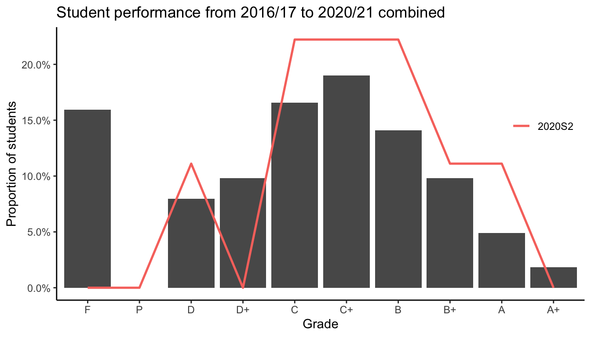

Contents
See the end of the document for the full module contents
We will first revisit in further detail the fundamental building blocks of mathematical statistics, beginning with set theory, probability theory and probability distributions. We will also learn about convergences of random variables in order to understand several very important results in statistics (e.g. the law of large numbers and the central limit theorem). The syllabus then focusses on the three important statistical inference activities: point estimation, interval estimation, and hypothesis testing. To cap things off, we will tackle linear regression, arguably the most important statistical tool at a practitioner’s disposal, from a mathematical aspect.
Readings
I estimate that you will probably only absorb 40% of the material through my lectures alone. Please supplement your understanding by reading the texts. These books are written by professors and course instructors who have uncountably more experience than I have, and are more able to explain the statistical concepts much better than I ever could. I used these books myself during my undergraduate years so I trust they will beneficial for you as they were for me!
Mandatory
Optional
Class Format
See the end of the document for the full schedule
Blended learning (mixture of face-to-face and online teaching). As per current university guidelines, I am instructed to conduct at least 40% of the course through online learning. Therefore, the format is as follows:
Video lectures. Each topic will be presented via videos released incrementally topic by topic. You may view these at your leisure, but you should aim to complete the viewings before the next set of videos are released. You are encouraged to take notes. There will not be any face-to-face or Zoom lectures.
Tutorials. We will have a 2-hour tutorial class (face-to-face) every other week. You will volunteer or be called upon to present the answers to the exercises. Another format we might do is “breakout sessions” where you split into small groups and tutor each other.
Breather/Recap sessions. We will dedicate a 2-hour face-to-face class every other week to recap the completed part. During these sessions, you will have the opportunity to clarify any concept or idea that you are still unsure of. No new materials will be taught, it is only for answering questions. You may not ask about the “starred” questions in the tutorials directly.
Two weekly sessions are timetabled: Tuesdays 1410-1600 and Wednesdays 1150-1340. Tuesday sessions will be for tutorials and Wednesdays for breather/recap sessions. Note that since we are doing video lectures, we will only see each other every other week. Classes will be in FOS 2.18, unless otherwise told.
Assessment
Formative assessment
- 1 \(\times\) mock exam in Week 14
- Exercise sheets
Summative assessment
60% examination: Closed-book, real-life and invigilated with “typical” worked out solutions type questions. The scheduled date for the exam is Tuesday, 4 May 2021, 2.00-4.00pm at Chancellor Hall (more details closer to the date). Answer 4 out of 5 questions. Calculators are allowed. A minimal formulae sheet will be provided, as well as statistical tables.
20% topical tests: Open-book, multiple choice format, online submission through Canvas. There will be seven tests in total, corresponding to each topic/part of the module. In total, there are 100 equally weighted questions (0.2 points each) so each test will have 10-15 questions depending on the topic. Each test will be available as soon as a new topic is taught, and will be available until the next topic is taught. You may take the test at any time in between. You will have 12 hours to complete the test once you start it. NO RETAKES.
10% tutorials: There are 7 planned tutorial sessions, corresponding to 7 exercise sheets. The majority of the questions are for practice (formative assessment), but there will 1-3 “starred” questions which you will have to hand in for grading. The total marks for all of these star questions will be 100, which then counts for 10% of the overall summative mark.
10% participation: I will give you marks based on your participation during tutorial sessions, breather/recap sessions, as well as online Canvas discussion groups. The marks will reflect your participation level for the entire semester. The rubric is found in the table below.
(BONUS) 5% notes: If you take notes for this course, you may submit them to me for grading. I will grade based on aesthetics (tidiness, organisation, readability) as well as content (did you grasp the key concepts? did you do all the little “green checks” from the lectures?). Check the schedule for submission dates.

Key Data
- Past class sizes: 2016S2 = 57, 2017S2 = 70, 2018S2 = 18, 2019S2 = 9, 2020S2 = 9 (avg: 32.6)
- SFE grade average: 3.7 / 5.0 (74.0 %)
